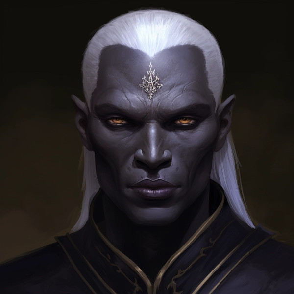

Figure 1: Aranuir Xanaphia
Born into a modest family in the Dathakhian Empire’s mountainous outskirts, Aranuir’s early life was marked by the simple rhythms of Durashim village life. His family, though not part of the religious elite, were devout followers of Gurth, honoring the traditions passed down through generations. From a young age, Aranuir showed an unusual serenity and a penchant for contemplation, often found in the local temple long after services had ended, lost in thought.
As he grew, so did his reputation for wisdom and kindness. His village was a place where the orthodox and the Veiled Thaerith’s followers coexisted, and Aranuir was often the mediator of their disputes, a role that came naturally to him. His ability to listen, understand, and find common ground made him a beloved figure.
However, tranquility in the village was shattered when a zealous faction of the Veiled Thaerith accused a prominent orthodox family of blasphemy. The resulting conflict led to a violent skirmish, deeply scarring the community and taking the lives of Aranuir’s closest friends. Devastated, he questioned the very tenets of his faith that could lead to such bloodshed.
Seeking answers and solace, Aranuir embarked on a pilgrimage, traveling to various temples, libraries, and places of learning across Naurrnen. He sought out scholars, hermits, and even those of other faiths, striving to understand the essence of Gurth beyond the divisive dogmas that tore his people apart. His journey was as much about spiritual discovery as it was an internal quest to reconcile the peaceful deity he believed in with the wrathful god others revered.
Through his travels, Aranuir compiled writings, stories, and philosophies about Gurth, shaping his own understanding of the deity. He witnessed the empire’s changing landscape, the ebb and flow of trade, and the mingling of diverse cultures. These experiences broadened his worldview and deepened his conviction that unity could only be achieved through a shared pursuit of truth and understanding.
During his pilgrimage across the diverse lands of Naurrnen, Aranuir found himself in the shifting sands of the Kauklatan Desert. It was here, under the relentless sun and amidst the endless dunes, that he encountered the Mochveneba — the “ghost people.” Their fierce independence and striking appearance immediately intrigued Aranuir, and he sought to understand their ways.
Living with the Mochveneba, Aranuir observed their enchantment of weapons, a practice that seemed to bind the spirit of the desert itself into the very metal. He witnessed their rituals, their dances of war and celebration of peace, and he saw in them a mirror of his own people’s struggles — a fight for balance and identity.
Their belief in the cycle of life and the separation of spirit and consciousness resonated with Aranuir. He saw parallels with the Durashim’s reverence for Gurth, but noted where his people’s focus on the afterlife diverged from the Mochveneba’s emphasis on the present. It was a transformative experience, one that taught him the value of being fully immersed in the now, even as he sought to heal the fractures of his faith.
From the Mochveneba, Aranuir learned the importance of inner peace and clarity. The Mochveneba warriors, covered in their red and black stripes, did not fight for conquest but to maintain the delicate equilibrium of their existence. In their presence, Aranuir found a stillness of mind that eluded him in the temples and libraries of his youth.
This chapter of his life deepened Aranuir’s resolve to return to the Dathakhian Empire and use the insights gained from the Mochveneba to bridge the divides within his own people. Their simplicity, their connection to the land, and their profound spiritual presence influenced Aranuir’s vision of a unified path for the Durashim — one where balance and the present moment were held in as high regard as the revered traditions of the past.
Returning to the Dathakhian Empire as a young adult, Aranuir found his homeland on the cusp of significant change. The political leaders, aware of his pilgrimage and growing influence, saw in him a symbol of unity they could present to the court. Aranuir, though reluctant to engage in politics, recognized the opportunity to share his vision for a harmonious worship of Gurth.